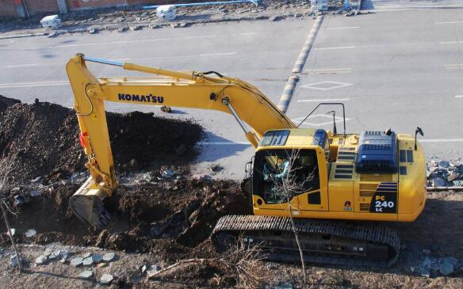
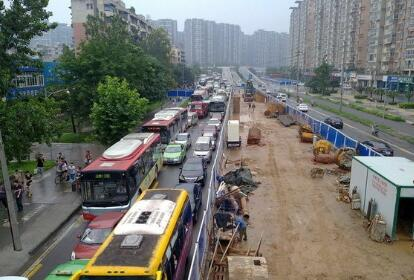

| 序号 | 编号 | 高后果区等级 | 识别单位 | 识别时间 | 管道名称 | 管径(mm) | 起始桩号 | 起始里程(km) | 结束桩号 | 结束里程(km) |
|---|---|---|---|---|---|---|---|---|---|---|
| {{index+1}} | {{item.num}} | {{item.grade}} | {{item.unit}} | {{item.datetime}} | {{item.pipe_name}} | {{item.pipe_diameter}} | {{item.start_median_num}} | {{item.start_median_mileage}} | {{item.end_median_num}} | {{item.end_median_mileage}} |

3家
十八个月未上报

5家
缺少一区一案
GB32167《油气输送管道完整性管理规范》
《国家安全监管总局等八部门关于加强油气输送管道途径人员密集
场所高后果区安全工作的通知》安监总局管三[2017]138号


